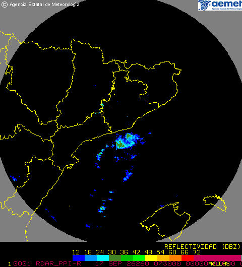

Inicio
Avanzado
Divulgación
Panel
Panel de control — contenido en construcción.
Radar Regional
Reflectividad en tiempo (casi) real — radar de Gelida, AEMET.

Fuente: AEMET OpenData · actualización automática cada 10 min